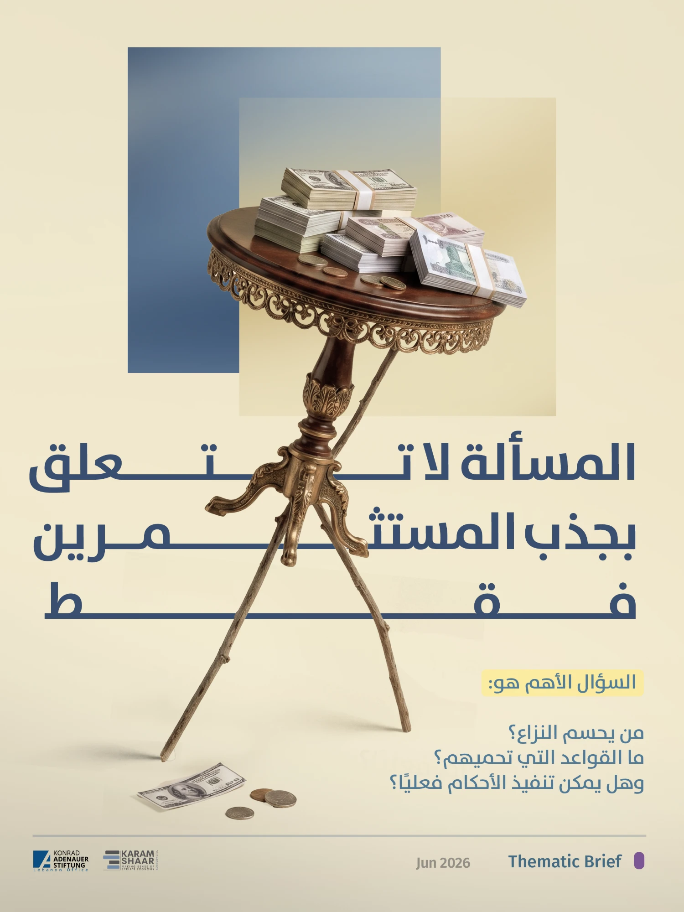
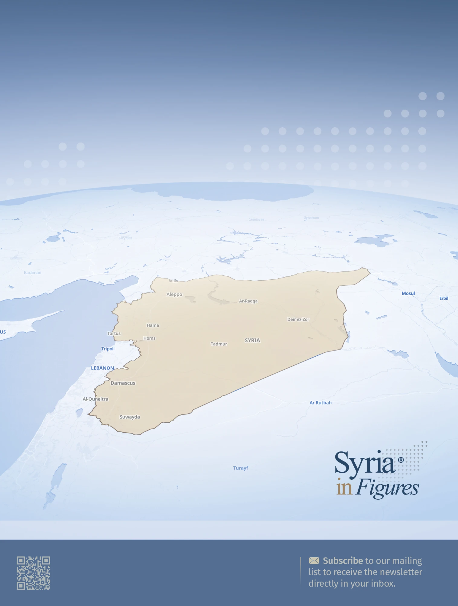

Market and sector assessments
Where the economy stands, how a sector works, and whether an opportunity holds up. Built on primary and secondary data.
- Macroeconomics
- Market and sector assessments
- Feasibility studies
- Investment-opportunity studies
We pair rigorous data analysis with deep local context and field access inside and outside the country.
We help clients make informed decisions about Syria's economy, business environment, and investment landscape.
What sets us apart is a combination that is hard to find in one place: thoughtful data-driven analysis, deep knowledge of the local context, and access to sources and field data inside and outside the country.
Every engagement is tailored to the client, whether an international organisation, a government, a business, a donor, or an NGO.
Where the economy stands, how a sector works, and whether an opportunity holds up. Built on primary and secondary data.
Background checks on individuals and entities inside and outside Syria, drawing on open sources, field interviews, and a wide local network.
Analysis of financial and banking activity in Syria, supported by our exchange rate trackers and in-house data work.
Energy studies, aid and development work, and reconstruction, including real estate advisory and project development.
Market assessments, sector analysis, feasibility studies, risk assessments, and studies of Syria's economic and institutional transformations.
Up to 1,000 words of practical findings and actionable recommendations. Turnaround depends on topic and data availability.
Most useful early on. Booked by the hour or shaped around your needs.
Checks on individuals and entities, built from open-source research, field interviews, and our local network.
Monitoring, evaluation, accountability and learning (MEAL), capacity assessments, and field data collection. Discussed and priced case by case.
Sessions for diplomats, organisation staff, and companies working on Syria.
425USD
per hour
Free of charge for students.
24-hour turnaround
4,500USD
For individuals and groups
1,300USD
Custom-built for your data and audience
from11,000USD
Scoped and priced case by case



Syria in Figures and our thematic briefs show how we handle data, context, and argument.
Browse publicationsDescribe the decision in front of you. We will come back with a scope, a timeline, and a cost.
This is a design preview, so nothing was sent. On the live site this message confirms receipt and when to expect a reply.